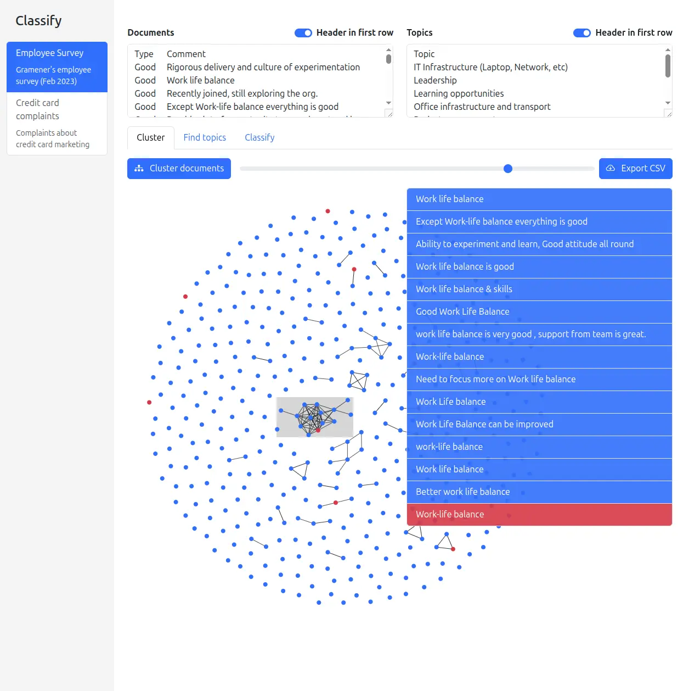
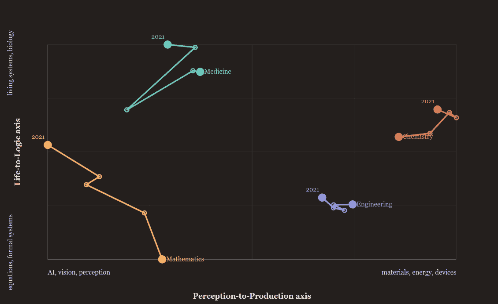

The room went quiet in the wrong way. Anand had just asked sixty-odd of IIM Bangalore's brightest business-analytics students a simple question — "How many of you have used the =AI function on Google Sheets?" — and not a single hand went up. He tried again, gentler: How many of you have used Google Sheets at all? A forest of hands. So the tool they had all used for years had, sometime in the last few months, quietly grown a new function, and none of them had noticed.
That gap — between what our tools can now do and what we think they can do — is the whole story of the afternoon. It was a Multivariate Data Analysis class, part of the PGP in Business Analytics, and by rights it should have been about eigenvalues and factor loadings. Instead, the guest — an IIMB alumnus his old professor introduced, with visible pride, as "the only person I know who was the gold medalist in academic rank and the all-rounder" — spent three hours dismantling a comfortable assumption: that knowing how to run a method is the valuable part of the job.
He typed =AI() into a cell and turned it over to the class. Someone suggested "generate a list of numbers." Out came a markdown list. Someone else — closer to the point — suggested bucketing company revenues into small, medium, large. "Instead of big formulas," they said, "we can use this." And there it was: a spreadsheet function that could classify text, something forty years of business analytics had mostly left alone.
"Our strategy is very simple. Make sure you can't use AI. Make sure we can use AI. Our life becomes easy, and we like torturing you."
— Anand, on why this was the one class where students were required to use AI
Act 1 · ClassificationTwenty-five companies, five different answers
To make it real, he needed data — so he made some, live, in the middle of class. He asked ChatGPT to generate a small public-looking dataset of company revenues, downloaded it as companies.csv — twenty-five fictional firms like CloudHarbor and FreightBridge, each with a one-line description — and threw it to the room. Your task: classify each company into SaaS, Marketplace, Services, Manufacturing, Consumer Brand, or Fintech, and tell me the counts.
This is where a normal class would have gotten a single, tidy answer. This class got a small riot of them. One student, on Gemini Flash, reported exactly four per category. Another, on ChatGPT, got 5-5-5 and 3-3-3. A third got 4-3-4-4-4-5. A fourth ran Claude Sonnet against Claude Opus and watched the two models disagree with each other. Same twenty-five companies. Same six buckets. Different tallies from every seat in the room.
Anand let the discomfort sit, then named it:
"If you ask two people, they won't necessarily say the same thing. For humans, we call that lying, we call that loss of memory, we call that absent-mindedness. For AI, we call it hallucination. Not that much of a difference."
— Anand
Here is the pivot the whole session turns on. The students had been taught to distrust indeterminism — a good model should give one answer. But Anand's point was subtler: text classification used to be an intern's job, a slow human process riddled with exactly this kind of variation, and management has known how to handle wobbly humans for centuries. If AI wobbles the same way, maybe the same management tricks apply. One student had already stumbled onto the first trick without being told: they fed one model's answer to another and asked it to find the misclassification. MetricNest, ClinicFlow, BuildPulse — the second model flagged the three it thought were wrong. Cross-examination between agents, invented on the spot.
B1 he typed =AI("Categorize into fruit, country, or sport: " & A1) and dragged it down. Open the Google Sheet ↗ — or explore the embedded copy below.
Classification, Anand argued, had quietly become easy — and that mattered more than it sounds. "Largely for the last forty–fifty years, people have not been analyzing text, but we have lots of text." Anything you can now do with all that dormant text is, almost by definition, new — and therefore insightful.
Act 2 · Handling hallucinationAsk five models. Fire seventy-two people.
But if models disagree, how do you trust any of them? This is not a rhetorical question at Straive — it is a production problem. Anand pulled up a real one: a logistics client's inbound service center, where messages like "When will I receive my order?" and "What do I need to do to register?" have to be routed to the right queue. They had the correct labels. They ran a fleet of models against them. And the results were a beautiful mess: Nova-Lite nailed a question that GPT-4.1 Mini and Gemini 2.5 both fluffed.
Then came the twist that turns a technical talk into a management lesson. Every model insisted that "Help registering" belonged in "Create Account" — but the client swore it was "Registration Problems." Anand went back. And back again, to the client's boss. "Absolutely should be Registration Problems," they said. And the team learned something uncomfortable.
"When people say 'classifying it correctly,' they mean 'classified the way I have been classifying it.' It does not mean classified correctly — because they could be wrong."
— Anand, on the day every model agreed and the client was the one hallucinating
If every model consistently disagrees with the "right" answer, that is itself a signal — a good chance the source labels are wrong. But the deeper find was mathematical, and Anand walked the room through it slowly, because it is the kind of thing that quietly changes a P&L. The errors different models make are barely correlated — Llama 3 and Amazon Micro agree with each other maybe 20% of the time when they're wrong. So you can stack them.
One model is a coin toss. Five models are a near-certainty.
And the disagreements — the cases a human still has to arbitrate — happen only ~12% of the time for two models, ~28% for five. "My call center workforce of 100 people can become 28 people, and I still have 99.3% accuracy. I'll take it."
When a student asked the obvious question — what happens when the models disagree? — Anand's answer was almost old-fashioned. "I send it to an agent. A human agent. Not an AI agent. And say, 'These two agents are disagreeing. You've been doing this for donkey's years. What do you think?'" The word agent doing double duty was the joke and the point at once.
Why not just trust the model to do arithmetic itself? Because it can't — reliably. Anand had built a little demo precisely to humiliate the models on this, and it's worth playing with: ask an LLM in plain chat mode to do mental math or count letters, and it stumbles; give it the ability to write and run code, and it's flawless. The lesson isn't "AI is dumb." It's "know which mode you're in."
This was the moment Anand broke for the survey — the day's secret spine, which we'll come back to. "Take a guess," he told them about its trickier questions. "It's absolutely not evaluated. The point is what is the first answer that comes to your mind." The questions weren't really testing the students. They were testing whether the students knew when the AI would be right or wrong — the single most useful thing to know about any tool.
A student raised the philosophical version of the whole afternoon's problem: "Is it easier for us to judge AI, or for AI to judge us?" — because in the logistics story, the humans had been the ones who were wrong. How, if the AI might know more than you, can you ever check it? Anand's answer was a list of institutions that have solved exactly this for centuries:
"How does an auditor, who knows nothing about the business, audit a company? How does a jury, who know nothing about science, rule on patents? People with low expertise have figured out a variety of mechanisms to manage the veracity of smarter systems."
— Anand
Cross-question it. Ask a second AI. Tell it "my friend said something different." Or — his favourite — the Kissinger gambit: hand it back with nothing but "Is this your best work?" and let it find its own mistakes. "How do I know all this? Because I asked Claude a few days ago," Anand admitted. "A big part of what is the counter to AI is: learn from AI."
Act 2½ · A mirrorWhat four years of my Google searches say about me
The most personal demo was also the most quietly radical. Anand had taken his own Google search history — everything since January 2021, pulled via Google Takeout — dropped it into a sheet, added an =AI column, and asked: what am I searching for, and how is it trending? The result was an uncomfortably honest self-portrait.
"I was able to get a mirror into myself. I had implicitly gathered survey data about myself — by looking at my Google search history."
— Anand
And the leap is obvious the moment you see it: you could do this for anybody. Customer transactions, UPI flows, bank statements, card spends — "tell me the categories, the trends, for every customer or category of customer. Are Chennai customers buying differently from Bangalore customers?" Each =AI call is a brand-new column of insight bolted onto data you already own.
Straive is already selling this. A waste-management client had invoice line-items scattered across three ERP systems and a couple of legacy billing platforms, all flowing into Snowflake, with humans hand-categorizing each line. Anand's colleague Manoj pointed Snowflake's built-in Cortex AI at it — "just like the AI function in Google Sheets" — and classified whether each line was standard, emergency, spot, or one-time at over 90% accuracy. About as good as the humans. "I'm giving you an extra column. You don't want to use it, don't use it. It's there for free."
Act 3 · ClusteringThe exam where copying is encouraged — and half refuse
So far, so tidy: you tell the AI the buckets, it sorts things into them. That's classification. But what if you don't know the buckets? What if you want the data to reveal its own natural groups? That's clustering — and to explain it, Anand told a story that made the room laugh, then think.
He teaches Tools in Data Science, a course at IIT Madras, where — right at the top of an exam — it says: you may copy from each other. Sit in a group. Pay somebody to take the exam for you. I don't care. Score high. Then he asked the class to guess: what fraction of students, given explicit permission to cheat, still refuse?
"Fifty percent of the class is not copying. I'm begging, I'm pleading — 'Please copy, score higher marks.' 'No, we are ethical. We don't have any friends. We are independent-minded.'"
— Anand, on the stubborn honesty of half his students
The point wasn't the ethics. It was that he could see the copying — as structure. Every student's submission is a dot; connect the dots whose code is nearly identical, and clusters bloom: a leader (roll number 23F10050), a first follower in yellow, a crowd of red copiers, and — off to the side, unconnected — the grey islands of the genuinely independent. You can even watch one cluster merge into another at 99% similarity, the tell-tale of a student who copied, changed one line, and passed it on.
How did he get a distance between two programs? He didn't know either — so he asked. ChatGPT proposed Jaccard similarity, an ugly-looking formula that turns out to be intuitive: slice each program into overlapping five-word phrases and count how many phrases two programs share. "'Boss, I don't understand what Jaccard similarity is.' 'No, I know you can solve it.'" Two rounds of "is this your best approach?" later, he had his metric and his clusters — none of which he wrote himself.
But word-overlap has a fatal weakness, and Anand caught himself red-handed demonstrating it. He'd been asked to write an article for Built In magazine, AI-free, and run it through Pangram, an AI-detector. His AI draft scored 100% AI. His "rewrite in my style" scored 100% AI. So he read the article aloud, transcribed his own slightly-reworded speech, and — 100% human. Same ideas, different words, and every surface-level similarity metric was fooled.
"Copying takes many different forms. People will smartly change a few words. You can't just take the word similarity — you have to do something different. And that is what leads us to the concept of embeddings."
— Anand
Act 4 · Embeddings1,500 principal components of language
Only about 10% of the room had heard the word "embeddings," so Anand built the idea from a place they knew — Principal Component Analysis, which the course had already covered. Picture a dictionary of 40,000 words as 40,000 columns; mark a 1 wherever a sentence uses a word. Now you've turned language into numbers. But swap the words for concepts, and compress those 40,000 columns into ~1,500 independent dimensions, and you have an embedding.
"Imagine that there are 1,500 principal components that break all of language down. That is what embeddings effectively are."
— Anand, translating a deep-learning concept into a stats-class one
Then, instead of explaining further, he did the thing that makes his classes unusual: he asked the students to build the tool themselves, live. "I'd like you to vibe-code an app where I type in two phrases and it calculates the embedding similarity. Do I personally know if this is possible? I don't. I've never asked for one." He gave them a form, a six-minute clock, and permission to fail.
What came back was a gallery of near-misses that taught more than a success would have. One student's app (Saurabh's) downloaded an entire LLM into the browser to compare two phrases — "a remarkable feat of engineering… running an LLM in my browser itself, in six minutes. However, it is not what I want for this class." Others computed cosine similarity between numbers you typed in (correct, but skipping the text-to-numbers step). Some — like this Gemini build and EmbedAlign, a local embedding calculator — got genuinely close. Pawan's finally did the real thing.
"A big part of this exercise is teaching you how to vibe-code on the fly, how to share. The fact that I'm pointing out all these little nitty-gritties, despite you having accomplished something pretty significant, is to take you to that next level. Please don't worry that you haven't gotten there."
— Anand
With Pawan's calculator, he typed six words — Apple, Orange, Jamaica, Football, Jordan — and the numbers told the truth without being told the categories. Apple↔Orange: 37%. Jamaica↔Jordan: high. Fruits clustered with fruits, countries with countries, and the exact distance between any two phrases was now just a number he could compute, store, and reuse for free.
That's the leap from classification to something more powerful. Classification puts things in your buckets. Embeddings give you the raw geometry — "the exact distance between two documents" — from which clusters, classifications, and maps can all be derived. And crucially, unlike an =AI call, it's cheap, deterministic, and stays on your data.
Then Anand showed what it looks like at scale, on data he actually cared about: Gramener's 2020 employee survey. Two hundred employees, asked "what's good?" and "what's bad?" — two free-text columns that "nobody has the patience to read," and which had sat unanalyzed for years behind a tidy NPS score. He clicked Cluster documents.

The power, he explained, comes from three things stacked together: embeddings (making the text comparable), a clustering algorithm (or, here, something simpler — just connect the similar dots), and a force-directed layout — electrons repelling each other but tethered by springs, a physics simulation nobody has to code because the libraries already exist. "You just say 'vibe-code a force-directed layout,' and it will do it." Add a brushing interface to inspect any region, and exploration becomes possible.
"Exploration is fantastic when you are trying to figure out something you don't know you want."
— Anand, on exploratory clustering
And if you'd rather not do even that work, there's topic modeling — "I want IT to figure out what the clusters are." Run K-means, ask a model to name each cluster in two-to-four words, and out come "Office amenities and IT," "Project planning and delivery," "Team collaboration and quality." A student, Saksham, asked the sharp question: wasn't ChatGPT already doing embeddings when it classified? This unlocked the cleanest explanation of the day:
"LLMs predict the next word. Embedding models do something different — they say, 'I'll do the equivalent of a PCA and give you all the concepts this represents as a 1,500-long vector.' They're a lot less popular. Advantage: very cheap, deterministic, and reliably on your data."
— Anand
Once you've named the clusters, you can turn back to classification — but on your terms. Anand split "Office amenities" from "IT infra" because Girish the office admin and Sagar the IT admin have different jobs; merged "Gratitude" and "No feedback" because neither is actionable. Discovery gives you the map; classification lets you route it to whoever has to act. That round trip — text → numbers → clusters → named topics → actionable buckets — was, quietly, an entire multivariate pipeline, run without anyone touching a formula.
Act 5 · Beyond textLong-lost twins, a dying lake, and Calvin's bully
"The incredible power of this is we have moved from numbers to text. But from text to images, code, video, audio, DNA sequences, food recipes — is only a small step." And so the afternoon widened. The trick — embeddings exist for images too — and once they do, everything you did with text you can do with pictures.
He showed a grid of Bollywood actors, arranged by facial similarity. The uncanny result: Shreyas Talpade looks closer to Riteish Deshmukh than many actors look to photos of themselves. Casting a long-lost brother for Nana Patekar? The embeddings nominate Anil Kapoor. It's a party trick — until you remember the client who actually paid for it: a real-estate firm that wanted "I've seen this bedroom — show me other properties that look similar," and Times of India, who wanted to search a photo archive for "Rajiv Gandhi, smiling vs. sad."

Then the scale jumped again — to the whole planet. Times of India asked whether AI could read geospatial data and hand back stories. Anand's colleague Varun (still in college) tossed a model called OlmoEarth — "he doesn't really know what this is, nor do I" — into Claude Code and asked: what has changed in Bangalore over ten years? The method was pure embeddings-and-cosine: take the word "vegetation," measure its similarity to a satellite tile in 2015 and again in 2025, and subtract. Do it over a 100m × 100m grid across the city.
Bellandur Lake, found by a falling vegetation score
The heatmap glowed red where vegetation had dropped. One of the biggest drops pointed straight at a lake that had retreated behind new construction — Bellandur — a story the data surfaced on its own. "I don't have to sit and search; the data itself gives me stories."


The same idea powers stranger things: Epicure Explorer, an embedding model for recipes, telling you which dishes and ingredients sit near each other. Embeddings, Anand kept repeating, are not just a way to analyze — they're a way to manufacture new columns: a long vector of concept-scores you can then cluster, classify, and map.
And mapping is where he lingered longest — because a map of a space lets you spot both outliers and motion. He'd spent seven years typing up 3,700 Calvin and Hobbes strips, embedded the text and images, and laid them out with UMAP. Distinct islands appeared — and they had meaning: one was all Moe the bully, one all Rosalyn the babysitter, one Calvin's superhero fantasies. Characters the algorithm had never been told about, surfacing as geography.
Which brings us to the most consequential map of the day. The National Institute of Engineering, Mysore came to Straive with a problem: their NIRF ranking had slid from ~100 to ~200. Claude's research said the biggest lever was research output. So Straive embedded every paper NIE had published, embedded the whole surrounding research landscape, and asked where NIE sat against it.
Watching it evolve year by year told a history: almost no research in 2021, a burst in 2023 "triggered by ChatGPT," then a spread into safety, remote sensing, materials. But the real insight came from tracking each field's centre of gravity as it drifted across the map.

From a map to a strategy. "Formal systems" was a white space NIE could target. And because overlapping embeddings reveal who works alike, the analysis could name collaborators: Ramya Jayachandran in ECE writes papers that overlap Imran Jamadar's in Mechanical — why not co-author? It could even point outward, to the Chinese Academy of Sciences and named external researchers already working the gaps NIE wanted to enter.
"Now you have a list of names and universities you can start reaching out to — which makes it ultra-actionable."
— Anand, on turning an embedding map into a research plan
The plan wrote itself: raise NIRF → lever is research → find the gaps and the drift → then find who to collaborate with, inside and out. All of it — Anand stressed — powered by two things only: embeddings, and the interpretation of the axes. "Read the full research-strategy story," he offered, and moved to the part he'd been building toward all along.
Act 6 · The Judgment Index"I misjudged the room badly"
Two hours earlier, Anand had asked the class to fill out a survey called The Judgment Index — Can You Out-Judge the AI? He never linked it here, but you can picture its questions: how much of a project would you let an AI run unsupervised? Which critique of a flawed analysis is best? Roughly what's the chance you have a disease after a positive test? Will an AI count "ana" in "banananas" correctly? A Liveform survey — and here is the reveal that made the whole afternoon click into place.
"This survey was created entirely by Claude, which I prompted late last night with the professor's email. It also knows why it asked each question. I do not know the reason."
— Anand, inverting the entire premise of a data project
This was the mirror-image of everything before. All afternoon the students had done purpose-driven analysis: here's a problem, solve it with data. Now Anand demonstrated data-driven discovery: here's some data — you find something worth knowing. He opened ChatGPT, and instead of typing, he dictated.
"Dictation is like a superpower. When we type, our ability to think reduces a little. When we speak, we brainstorm and come up with stuff on the fly. With AI, we have stenographers in our pockets."
— Anand
He flagged three things in flight: dictation; the fork between purpose-driven and data-driven analysis; and skills — his codified, reusable prompts. Over years he'd condensed "how I do data analysis" and "how to write a meeting readout I can read aloud" into short documents he pastes in as system prompts. "We're codifying what we know as a skill, and what we want as a skill — both intent and ability — into prompts we can re-leverage." Then the machine's readout landed on screen, and Anand read it out cold. The first line stung.
The crowd is bad at reading the crowd.
Our own recount of the 68 responses confirms it: average predicted "high-trust" share ≈ 69%, actual ≈ 26.5%. "Every one of you thought you were the careful one and everyone else was reckless. You're wrong about each other."
The survey had caught the class in a textbook case of pluralistic ignorance — each student cautious, each convinced everyone else was cavalier, the average collapsing to the same middle. And it went further. Only ~28% caught that the strongest critique of "we assumed a normal distribution of monthly income" is that income is right-skewed — the kind of buried assumption you'll be delegating to AI and won't catch.
"People who trust AI the most are the worst at checking it. High-trust folks caught the flaw 11% of the time; skeptics, 26%. The more favorable you are to AI, the less critical you are of it. Watch that."
— the AI's own analysis, read aloud by Anand
Then the finding that doubles as the course's thesis: there is no single "AI-savviness" score. PCA couldn't find one dominant axis; being good at catching one kind of error told you almost nothing about catching another. "Don't trust anyone who sells you one number for how good someone is with AI."
But the survey wasn't the climax. What the students did with it was. Anand handed them an anonymized copy — asking the AI to strip the PII, because "what I don't know is what I don't know; is there a text field where someone typed their name?" — and set them loose. Within minutes, insights he hadn't found came flying back:
The skepticism paradox
"People who say they don't trust AI end up using more AI tools." Daily users were the most skeptical of all. Do they distrust it because they see its failures up close?
Projection bias
"My estimate of how much others use AI is proportional to how much I use it." The six who said they rely 100% on AI guessed 80% of the class does too.
Adversarial cross-check
Each claim went into a second model to be falsified. "A good way of doing pair programming or adversarial red-teaming, depending on your context."
n = 6, p = 0.2
Directionally real, not significant — "59 of 67 are daily users, so there's nobody light to compare to." The class learned to size its own confidence.
This was the multivariate class turned inside out. The students weren't computing correlations — they were debating them, cross-examining each other's models, and catching each other's interpretation errors. When one student's finding collapsed because ChatGPT had misread a variable name (predict_room → "a room session"), Anand owned it instantly: "I did the mistake, not the AI — I didn't give you enough data." The failure was a feature. It showed exactly where a human still has to stand.
"We're not very good at critiquing our own work; we're not particularly good at critiquing AI either. But we seem to be reasonably good at critiquing each other as people. So AI can serve as an assistant, and we can cross-verify."
— Anand
Which is where he named the arc the industry is on. First there was human-in-the-loop — AI generates, a human checks each output. But AI generates so much that the humans drown. So the human steps up to human-on-the-loop — another AI verifies, deterministic tests catch errors, and the human only reviews the exceptions the verifier flags. And beyond that, loop engineering: let the agents design the generate-verify-improve cycle itself.
"Because generation has become cheap, and what is cheap increases ROI, volume increases — which means human effort becomes the expensive part. We are increasingly moving ourselves out of the loop."
— Anand
The payoff of the data-driven approach came from a story about that same waste-management client. Anand's colleague Tanuj was boxed in — "we don't have notebooks, we can't use Gemini, what do we do?" — with only Snowflake and Cortex. So they fed it every document about the client and asked it to find the use cases. It generated fifteen. The head of analytics looked at them and went pale:
Half a day of prompting reproduced 80% of a month-long strategy engagement.
"In November we did a strategic consulting exercise — one to three months, fairly expensive — and 80% of that matches this." Then Tanuj didn't just propose the fifteen use cases; he told the AI to solve all fifteen, in a week. One of them surfaced this, in an email that actually went to the client:
"There are 105,000 transactions charging the client 16 cents when the service costs $175–$179. Either this is a data error — or you are leaking money like crazy. And 84,000 transactions where customers pay 6 to 14 times the median rate…"
A student asked whether hallucinations would ever fully vanish. Anand's answer reframed the word itself. Ask "was Rajiv Gandhi a good Prime Minister?" and no answer will satisfy everyone — "subjectivity can be seen as hallucination." And flipped around: "hallucination is creativity. If I want a model to come up with powerful new ideas, the more diverse its thought process, the better."
"If a document has ten categories that any human would agree is ten, that kind of hallucination is steadily reducing. If five humans would disagree between five and ten, that hallucination won't reduce — because we don't even know the answer. AI reflects human preferences. If humans are divided, AI will also be divided."
— Anand
He closed the loop with two last questions on the form — a small controlled experiment. "Finish this: 'AI is like a ____, because ____.'" and "Type any random word." The design behind them is mischievous: metaphors, embedded, cluster by meaning not spelling — "intern," "junior analyst," "eager grad" all land together — while the "random" words, embedded and clustered, form tidy-looking groups too, exposing how eagerly any clustering method invents structure from noise. Even an AI-authored survey can teach you not to over-trust an AI-authored analysis. (Curious how far this goes? Agents can now fill out surveys like people — see PersonaGen.)
The exitLearn what AI can't do
With ten minutes left, Anand stopped demoing and told the class what he actually wanted them to leave with — not as a lesson, but as an experience. Three things.
First: build skills in what AI cannot do. His method is almost provocatively lazy: "Give every task to AI. What it cannot do, I will learn — by necessity." If it writes the R code, don't bother learning R. If it can't physically walk down the hall and mend a relationship, learn that.
"There is merit in learning what AI cannot do, rather than learning what AI can do."
— Anand
Second: treat AI like people. Every chat window, he argued, is a subordinate — "possibly much smarter than you, but still reporting to you, because you have the accountability." Which means even an entry-level analyst is really in a management role, and the skills that make you good at AI are the skills that make you good at managing a team: specifying, delegating, feeding one person's output to another, giving feedback. He cited Wharton's Ethan Mollick, who finds exactly this.
Third: it's complementary, not a replacement. "Using AI will make you more efficient as long as you know how to use it well. You need to know how the fundamentals work. You need to know how to execute effectively. Both will come in handy."
And then Prof. Das rose to close — and gently, expertly, put the afternoon back inside his course. Everything Anand showed, he noted, had been "almost nothing to do with what we are doing, but everything to do with why we need to do it." He'd noticed something about the questions the students asked of the survey data:
"Look at the questions you all asked. There were interesting things — but they were all univariate, mostly. A little correlation. We did not see the multivariate questions. The heart of this course is how you look at all the questions together."
— Prof. Shubhabrata Das, reclaiming the multivariate high ground
It was the perfect ending, because it proved Anand's own thesis from the other side. The AI made the methods free. But knowing which question is worth asking of a dataset — the multivariate one, the one that looks at everything at once — that judgment is exactly the priced, human, un-automatable thing the whole afternoon had been about.